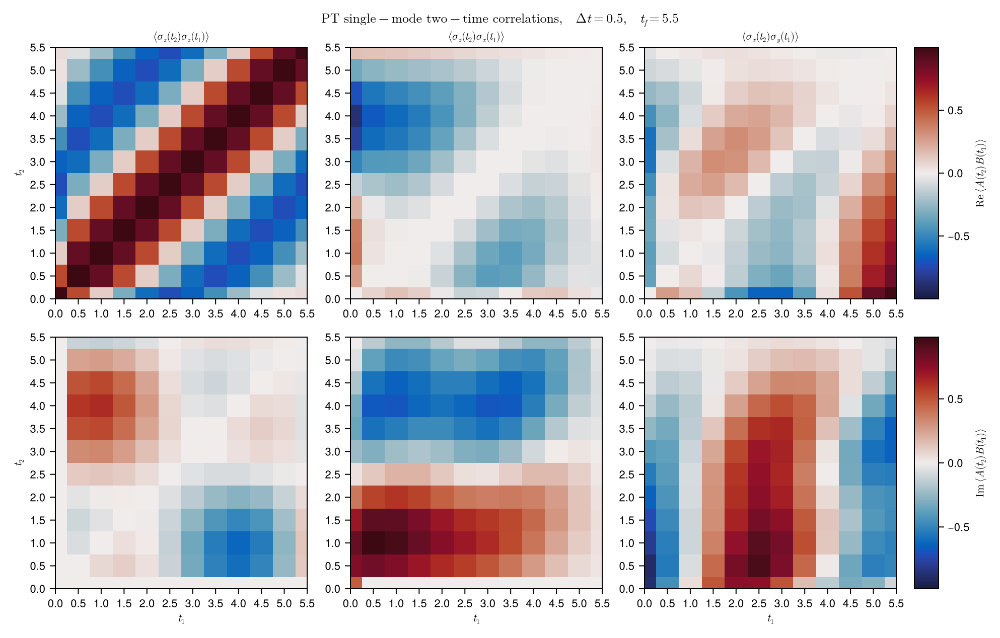

Multi-time correlations
A process tensor stores how an environment carries information between different intervention times. Once built, we can use custom instruments to probe many of its properties. One such object of interest that often appears in open quantum systems is the two-time correlation function. The observable on this page is
\[C_{zz}(t_2,t_1) = \langle \sigma_z(t_2)\sigma_z(t_1)\rangle .\]
The three-correlator figure below is generated by scripts/pt_multitime_correlations.jl.
Model
With $\hbar=1$,
\[H_S=S^x,\qquad H_E=S^x,\qquad H_{SE}=S^z\otimes S^z .\]
The system starts in $|\mathrm{Dn}\rangle$ and the bath spin in $|\mathrm{Up}\rangle$. The inserted operators are Pauli operators. In the code they are 2 * Sz, 2 * Sx, and 2 * Sy, because $S^\alpha=\sigma_\alpha/2$ on an S=1/2 site.
using ITensors
using LinearAlgebra: diag
using ProcessTensors
const dt = 0.5
const n_times = 6
const pt_nsteps = n_times + 1
system_sites = siteinds("S=1/2", 1)
bath_sites = siteinds("S=1/2", 1)
bath_liouville_sites = liouv_sites(bath_sites)
H_system = OpSum()
H_system += 1.0, "Sx", 1
system = spin_system(system_sites, H_system)
H_bath = OpSum()
H_bath += 1.0, "Sx", 1
H_coupling = OpSum()
H_coupling += 1.0, "Sz", 1, "Sz", 2
bath_state = to_dm(MPS(bath_sites, ["Up"]))
bath_state_liouville =
to_liouville(bath_state; sites=bath_liouville_sites)
bath_mode = spin_mode(
bath_liouville_sites,
H_bath,
bath_state_liouville;
coupling=H_coupling,
)
bath = spin_bath([bath_mode])ProcessTensors.SpinBath
modes: 1
space: Liouville
site dims: 4
bath Liouville dimension: 4
mode summary:
[1] SpinMode(dim=4, H_terms=1, coupling_terms=1)
Build the process tensor
build_process_tensor stores the influence of this bath on the system time legs. Later grids change only the instruments.
process_tensor = build_process_tensor(
system,
system.sites[1];
environment=bath,
dt=dt,
nsteps=pt_nsteps,
)7-step ProcessTensor{SpinSystem, SpinBath} | dt=0.5 | t_final=3.5 | maxlinkdim=4
system: SpinSystem(nsites=1, dissipative=false)
environment: SpinBath(nmodes=1, D_bath=4, coupling=true)
core: MPO{Liouville}(length=7, linkdims=[4, 4, 4, 4, 4, 4])
Two-time instrument schedules
For $t_2>t_1$, write $U(t)$ for the joint system–bath evolution and $\rho_{SE}$ for the joint state. The operators $A$ and $B$ act on the system and as the identity on the bath:
\[\begin{aligned} \langle A(t_2)B(t_1)\rangle &= \operatorname{Tr}\!\left[ U(t_2)^\dagger (A\otimes I)\, U(t_2-t_1)\,(B\otimes I)\, U(t_1)\,\rho_{SE}(0) \right] \\ &= \operatorname{Tr}\!\left[ (A\otimes I)\, U(t_2-t_1)\,(B\otimes I)\,\rho_{SE}(t_1)\, U(t_2-t_1)^\dagger \right]. \end{aligned}\]
The object $(B\otimes I)\rho_{SE}(t_1)$ is an auxiliary operator. The same joint evolution carries it from $t_1$ to $t_2$, and the trace against $A\otimes I$ is the correlator. Propagating that operator is a bookkeeping device for the ordered product. It is separate from preparing a post-measurement state, and this contraction does not replace the joint state by a reduced state at the intermediate time.
two_time_correlation_seq turns that ordering into an InstrumentSeq: prepare $\rho_0$ at the first leg, insert the earlier operator, insert the later operator, and use identity operations elsewhere. If $t_1>t_2$, the earlier and later insertions exchange, including whether the early insertion acts from the left or the right. On $t_2=t_1$ both operators sit on the same leg. evaluate_process contracts the sequence with the process tensor.
system_state = to_dm(MPS(system_sites, ["Dn"]))
sigma_z = OpSum()
sigma_z += 2.0, "Sz", 1
sequence = two_time_correlation_seq(
process_tensor,
(sigma_z, 2),
(sigma_z, 1);
rho0=system_state,
)
correlation = evaluate_process(process_tensor, sequence)
@assert correlation isa ComplexF64
@assert isfinite(correlation)Correlation grid
Each entry uses the same process tensor and a new pair of insertion times.
time_indices = 0:(n_times - 1)
times = dt .* collect(time_indices)
Czz = [
evaluate_process(
process_tensor,
two_time_correlation_seq(
process_tensor,
(sigma_z, t2),
(sigma_z, t1);
rho0=system_state,
),
)
for t1 in time_indices, t2 in time_indices
]
diagonal_error = maximum(abs.(diag(Czz) .- 1))
conjugate_error = maximum(abs.(Czz - Czz'))
println((
n_times=n_times,
final_time=times[end],
sample_correlation=correlation,
diagonal_error=diagonal_error,
conjugate_error=conjugate_error,
))
@assert all(isfinite, Czz)
@assert diagonal_error < 1e-10
@assert conjugate_error < 1e-10(n_times = 6, final_time = 2.5, sample_correlation = 0.8775825618903732 - 0.07108634239454276im, diagonal_error = 2.2394018390957957e-16, conjugate_error = 6.025261774537219e-16)
What the heatmaps show
The executable grid uses six times from $0$ to $2.5$, with $\Delta t=0.5$. The figure is the companion script on the same Hamiltonian and the same initial state, extended to $t_f=5.5$, for three operator pairs.

The left column is the autocorrelation. Because $\sigma_z$ is Hermitian and $\sigma_z^2=I$,
\[C_{zz}(t,t)=1 .\]
The real diagonal is one and the imaginary diagonal is zero, up to the contraction tolerance. Off the diagonal,
\[C_{zz}(t_2,t_1)^*=C_{zz}(t_1,t_2),\]
so the real part is symmetric and the imaginary part is antisymmetric.
The middle and right columns are cross-correlations. For the Pauli products
\[\sigma_z\sigma_x=i\sigma_y, \qquad \sigma_x\sigma_y=i\sigma_z,\]
the equal-time value is purely imaginary in exact arithmetic: it equals $i\langle\sigma_y(t)\rangle$ or $i\langle\sigma_z(t)\rangle$. Away from that diagonal, the conjugate partner is the correlator with the operator order reversed.
A diagonal that matches these identities checks the contraction at equal times. It does not by itself certify the off-diagonal entries, which depend on the joint evolution stored in the process tensor.
These comparisons test whether the grid is fixed by the system operators and the initial state, or whether the bath spin changes it.
- Try reducing the coupling strength such that the process tensor is approximately Markovian. How do the correlation functions change?
- Exchange the operator order and compare the new grid with the complex conjugate of the original partner.
- Set the coupling to zero and build a new process tensor. Compare the grid with the isolated-spin correlator.
Correlations at more than two times would place further system operators on those legs. One can use the same idea of applying left\right actions of operators and extend the analysis to obtain higher-order correlation functions.